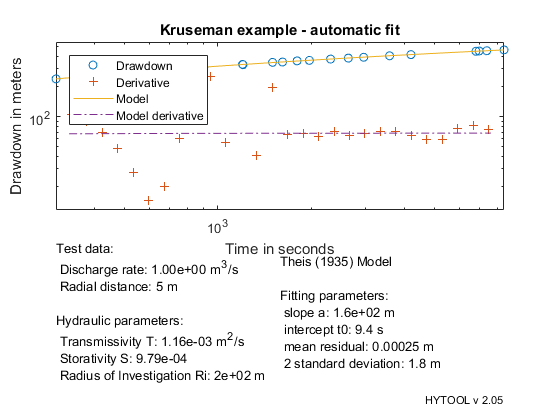
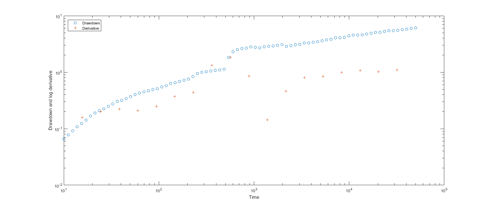
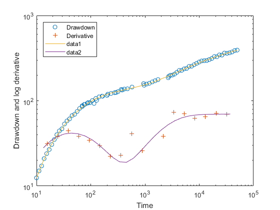
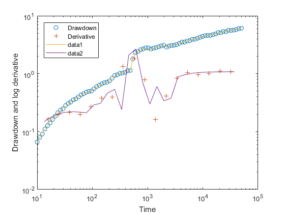

Reduced time for multiple rate tests
This demonstrates the interpretation of a step drawdown test in a fully penetrated confined aquifer (variable rate test).
Copyright 1998-2007 - Ph. Renard & Co. - GNU GENERAL PUBLIC LICENSE
Contents
The data set for this example comes from the following reference: Data set : Kruseman and de Ridder (1994) pp. 185 The data are collected in a piezometer located at 5m from the pumping well.
Let us first load the data and plot them.
[t,s]=ldf('tmr_ds1.dat');
q=[30*60,500/24/60/60;
80*60,700/24/60/60;
130*60,600/24/60/60];
Once the data have been loaded , we can interpret the data with the birsoy time and We estimate the p parameter with the function ths_gss and we find an optimum fit.
[tb,sb]=birsoy_time(t,s,q);
p=ths_gss(tb,sb);
p=fit('ths',p,tb,sb);
Norm of Norm of
Iteration SSE Gradient Step
-----------------------------------------------------------
0 14.522
1 14.5209 0.0747165 0.0128682
2 14.5206 0.00632047 0.00930169
3 14.5206 4.95682e-05 0.000755248
4 14.5206 3.0909e-08 6.28394e-06
Iterations terminated: relative change in SSE less than OPTIONS.TolFun
We can then display the result of the interpretation. Hytool find that the folowing values fort the transmissivity and storativity:
T= 1.2 e-3 m2/s and S= 9.8 e-4.
ths_rpt(p,tb,sb,[1;5],'Kruseman example - automatic fit');
 The results are in reasonable agreement with the values found by Kruseman and de Ridder (1994): T = 102 m2/d = 1.2 e-3 m2/s and S = 9.6 e-4.
We then find that the fits are rather similar and both acceptable.
BIRSOY_DEMO2 - Synthetic example showing the interest of Birsoy time
Syntax : birsoy_demo2
This example builds a synthetic data set for a variable rate test (6 different pumping rates) in a double porosity aquifer. The data set is made with the Warren and Root double porosity model. A random noise proportional to the signal is added.
In figure 1, the synthetic drawdown computed for that situation is shown as well as its derivative in log-log scale. This shows that the diagnostic plot cannot be used to identify the double porosity model when the pumping rates are variable.
We then use the birsoy_time deconvolution method, to obtain the equivalent time and drawdown with Birsoy and Summers (1981) technique. These data are then plotted in a diagnostic plot in figure 2. It is clear that the deconvolution allows to identify the double porosity model.
In addition a double porosity model is adjusted to the deconvoluted data to identify the values of the parameters and displayed as well in figure 2.
Finally, using the superposition principle, the initial signal is reconstructed with the fitted parameters and compared to the original data set in figure 3.
This shows that the deconvolution method works pretty well in those situations. The estimated parameters are very close to the original one and the drawdown curve is well reproduced.
tfin=5e4; % end of the synthetic data p=[160,20,200,400]; % reference parameters to build the data set q=[100,5.3e-3; % Pumping periods 200,6.3e-3; 500,8.3e-3; 1000,1.94e-2; 2000,1.76e-2; tfin,1.55e-2]; t=[logspace(1,log10(tfin),80)']; % time steps nbpumpingperiod=size(q,1); % build manually the superposition of begintime=[0;q(1:end-1,1)]; % the double porosity model pumpingrates=[q(1,2);diff(q(:,2))]; s=zeros(size(t)); for i=1:nbpumpingperiod is=find(t>begintime(i)); s(is)=s(is)+war_dim([p(1)*pumpingrates(i),p(2:end)],t(is)-begintime(i)); end s=s.*(1+rand(size(s))*.05); figure(1) % plot the synthetic data clf plot(t,s,'o-') xlabel('time') ylabel('drawdown') diagnostic(t,s) figure(2) clf [tb, sb] = birsoy_time( t, s, q); % compute the deconvolution (Birsoy time) diagnostic(tb,sb) % show the diagnostic plot p=war_gss(tb,sb); % fit a double porosity model on it p=fit('war',p,tb,sb); sc=war_dim(p,tb); % compute the corresponding solution hold on plot(tb,sc) % plot it on top of the diagnostic plot [td,sd]=ldiffs(tb,sc,30); plot(td,sd) % as well as its derivative figure(3) clf sc=zeros(size(t)); % For comparison, computes the synthetic for i=1:nbpumpingperiod % signal with the fitted parameter is=find(t>begintime(i)); sc(is)=sc(is)+war_dim([p(1)*pumpingrates(i),p(2:end)],t(is)-begintime(i)); end diagnostic(t,s) hold on loglog(t,sc) [td,sd]=ldiffs(t,sc,30); plot(td,sd)
Norm of Norm of
Iteration SSE Gradient Step
-----------------------------------------------------------
0 24774.8
1 7377.03 2368.37 129.22
2 1620.7 648.481 153.241
3 705.523 112.598 64.4442
4 677.926 2.68713 6.45887
5 677.909 0.000439167 0.178066
6 677.909 4.81846e-06 0.0121998
7 677.909 0.0101642 0.000290069
Iterations terminated: relative change in SSE less than OPTIONS.TolFun
  